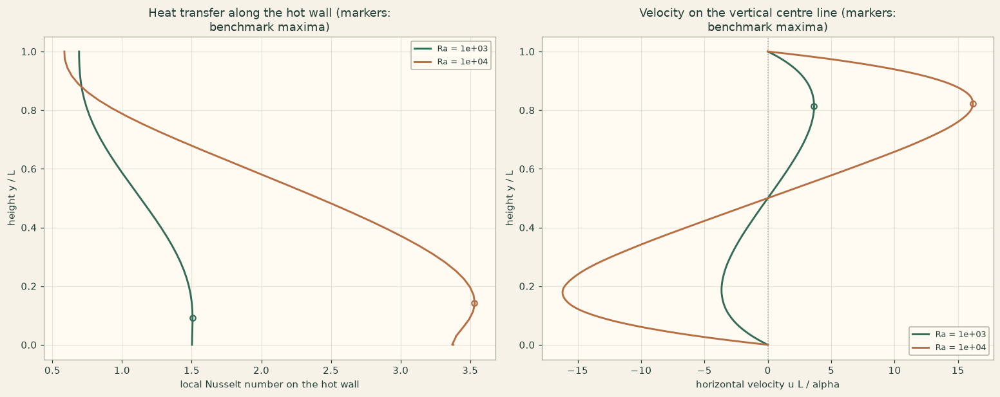
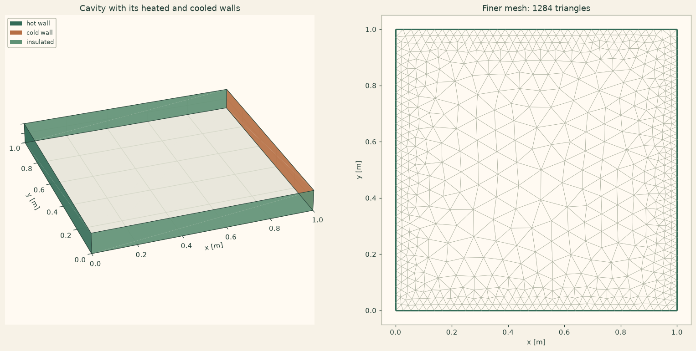

Docs › Examples › Buoyancy-driven flow in a differentially heated square cavity
Free convection · 2D
Buoyancy-driven flow in a differentially heated square cavity
A square cavity heated on one side and cooled on the other: buoyancy sets up a circulation that carries the heat across, the classic test of every free-convection solver.
Run locally with OneSimulation. The example downloads are free. Running them requires an activated runtime. Runtime Alpha 0.2.1a7 · CPython 3.13 on macOS (Apple Silicon), Ubuntu 22.04 (x86-64), and Windows x64. Installation and activation · View pilot plans. Scope of the reference checks.

What it computes
OneSimulation couples the steady Navier-Stokes equations (Taylor-Hood) and the heat transport (quadratic elements) both ways through a BoussinesqBuoyancy field coupling and solves them on the cross-section of a STEP slab at Rayleigh numbers 1e3 to 1e6 on graded triangle meshes: by stationary partitioned iteration up to 1e4, and at 1e5 and 1e6, where the partitioned iteration no longer converges, with one monolithic Newton method over both fields, reached by continuation in the Rayleigh number. Nusselt numbers, centre-line velocities and the local wall heat flux come from the solved fields. The script that builds the STEP file comes with the notebook.
What it checks
All benchmark quantities of de Vahl Davis (1983) up to Ra = 1e5 are matched: mean Nusselt numbers within 0.08 %, the velocity maxima within 0.04 %, the largest local Nusselt numbers within 0.14 % and all positions within 0.006 L; at Ra = 1e6 the mean Nusselt number 8.825 and the velocity maxima lie within 0.6 % of the benchmark and on the later spectral solution of Le Quéré; the heat in and out balance to five digits, and the coarser mesh changes the Nusselt number by 0.01 %.
Geometry
The notebook starts at the import of the CAD file differentially_heated_square_cavity.step: STEP (AP242), readable by any CAD program, with the names of the faces that the boundary conditions use. Put it next to the notebook.

The geometry script
The script differentially_heated_square_cavity_geometry.py builds the geometry with the CAD objects of OneSimulation and writes the file. Change a dimension there, run it, and run the notebook again.
"""Geometry of the OneSimulation example "Differentially heated square cavity".
Builds the cavity, a square of side 1 (dimensionless units) as a slab 0.1 thick, with the CAD
objects of OneSimulation and writes differentially_heated_square_cavity.step. The faces are named
hot (x = 0), cold (x = 1) and insulated (bottom and top); the example computes on the
cross-section z = 0.05.
"""
from onesim.cad.d3 import Box
cavity = Box(length=1.0, width=1.0, height=0.1)
cavity = cavity.grouped(
hot=cavity.boundaries.x_min,
cold=cavity.boundaries.x_max,
insulated=cavity.boundaries.y_min | cavity.boundaries.y_max,
)
cavity.save("differentially_heated_square_cavity.step")The notebook
The complete notebook, cell by cell. Run it to produce the figures and the comparison printout.
A square cavity of side \(L\) is filled with a fluid of Prandtl number \(Pr=\nu/\alpha=0.71\) (air). The left wall is held at \(T_h\), the right wall at \(T_c\), top and bottom are insulated. Warm fluid rises along the hot wall, crosses under the top, sinks along the cold wall and returns along the bottom. With the Boussinesq approximation (density variation only in the gravity term) the steady flow obeys
In units of \(L\), \(T_h-T_c\) and the thermal diffusivity \(\alpha\) the only parameters are \(Pr\) and the Rayleigh number \(Ra=g\beta(T_h-T_c)L^3/(\nu\alpha)\); the example solves \(Ra=10^3\), where conduction still dominates, \(Ra=10^4\), where the circulation bends the isotherms and concentrates the heat transfer at the lower end of the hot wall, and \(Ra=10^5\) and \(10^6\), where the flow gathers in thin boundary layers along the side walls around a stratified, almost still core.
The cavity comes from the CAD file differentially_heated_square_cavity.step, written by differentially_heated_square_cavity_geometry.py with the CAD objects of OneSimulation; the model lives on its cross-section.
| face | flow | heat | |---|---|---| | hot | no slip | \(T=1\) | | cold | no slip | \(T=0\) | | insulated (top and bottom) | no slip | no flux |
Reference. G. de Vahl Davis, "Natural convection of air in a square cavity: a bench mark numerical solution", Int. J. Numer. Methods Fluids 3, 249-264 (1983): the mean Nusselt number of the hot wall, the largest horizontal velocity on the vertical centre line and the largest vertical velocity on the horizontal centre line with their positions, and the largest local Nusselt number on the hot wall.
import numpy as np
from onesim.cad.exchange import load
from onesim.materials import ThermalFluid
from onesim.meshing import TriangularMesher
from onesim.numerics import Numerics
from onesim.numerics.coupled_systems import (
CouplingContinuation,
MonolithicStationaryCoupling,
StationaryPartitionedCoupling,
)
from onesim.numerics.fem import FiniteElement, GalerkinAdvection, Lagrange, TaylorHood
from onesim.numerics.field_transfer import FieldInterpolation
from onesim.numerics.linear import SparseDirect
from onesim.numerics.nonlinear import FixedPoint, Newton
from onesim.physics.heat_transfer import (
BoussinesqBuoyancy,
ConvectiveHeatTransfer,
FixedTemperature,
HeatFlux,
)
from onesim.physics.hydrodynamics import IncompressibleNavierStokes, NoSlipWall
from onesim.simulation import Problem, Simulation
from onesim.simulation.field_connections import FieldCoupling
from onesim.simulation.field_constraints import MeanValue
from onesim.simulation.initial_conditions import InitialValue
from onesim.visualization import plots, theme
theme.set()Geometry and mesh
section cuts the slab at half thickness; the cross-section keeps the face names. Two meshes whose triangles shrink towards the walls, where the thermal and viscous boundary layers sit: from 1/8 to 1/33 of the side and from 1/12 to 1/50, and a third one for the thin layers of the two high Rayleigh numbers, from 1/20 to 1/125 of the side.
part = load("differentially_heated_square_cavity.step")
cavity = part.section((0, 0, 1), origin=(0, 0, part.size[2] / 2))
faces = cavity.boundaries
meshes = {
name: TriangularMesher(
target_size=core,
size_field=lambda p, core=core, wall=wall: np.minimum(
core,
wall
+ 0.5
* np.minimum(
np.minimum(p[:, 0], 1 - p[:, 0]), np.minimum(p[:, 1], 1 - p[:, 1])
),
),
).generate(cavity)
for name, core, wall in (("coarser", 0.12, 0.03), ("finer", 0.08, 0.02))
}
meshes["layers"] = TriangularMesher(
target_size=0.05,
size_field=lambda p: np.minimum(
0.05,
0.008
+ 0.3
* np.minimum(
np.minimum(p[:, 0], 1 - p[:, 0]), np.minimum(p[:, 1], 1 - p[:, 1])
),
),
).generate(cavity)
mesh = meshes["finer"]
fig = plots.figure(1, 2, size=(13, 6))
plots.geometry(
part,
selection={
"hot wall": part.boundaries.hot,
"cold wall": part.boundaries.cold,
"insulated": part.boundaries.insulated,
},
labels=False,
camera=plots.Camera(elevation=30, azimuth=-110),
title="Cavity with its heated and cooled walls",
ax=fig[0],
)
plots.mesh(
meshes["layers"],
groups=("all",),
legend=False,
title=f"Boundary-layer mesh: {meshes['layers'].cell_count} triangles",
ax=fig[1],
)
plots.show()Model
One flow model (Taylor-Hood elements) and one heat model (quadratic elements) on the same mesh. Two FieldCouplings close the loop: BoussinesqBuoyancy turns the temperature into the body force of the flow, and the solved velocity carries the heat. Up to \(Ra=10^4\) StationaryPartitionedCoupling alternates the two stationary solvers with under-relaxation until both fields stop changing. At high Rayleigh numbers the buoyancy feeds back too strongly for that: at \(Ra=10^6\) the flow solver alone no longer converges with the temperature of the previous sweep. There MonolithicStationaryCoupling solves flow and heat together with one Newton method whose Jacobian holds both coupling blocks, and CouplingContinuation reaches the target through smaller Rayleigh numbers (\(10^4\to10^5\to10^6\), as factors of the buoyancy). In the dimensionless units \(\rho=c_p=k=\beta=1\), \(\mu=Pr\) and \(g=Ra\,Pr\). \(Ra=10^3\) and \(10^4\) are solved on the finer mesh, \(Ra=10^4\) also on the coarser one, \(Ra=10^5\) and \(10^6\) on the boundary-layer mesh.
prandtl = 0.71
fluid = ThermalFluid(
density=1.0,
dynamic_viscosity=prandtl,
thermal_conductivity=1.0,
specific_heat_capacity=1.0,
thermal_expansion_coefficient=1.0,
)
flow = IncompressibleNavierStokes(domain=cavity.domain(), material=fluid)
heat = ConvectiveHeatTransfer(domain=cavity.domain(), material=fluid, velocity=None)
numerics = {
flow: Numerics(
spatial=FiniteElement(element=TaylorHood()),
initial_guess={flow.velocity: (0.0, 0.0)},
nonlinear_solver=Newton(
linear_solver=SparseDirect(),
absolute_tolerance=1e-10,
relative_tolerance=1e-9,
),
),
heat: Numerics(
spatial=FiniteElement(
element=Lagrange(order=2), convection=GalerkinAdvection()
),
linear_solver=SparseDirect(),
),
}
results, coarse = {}, {}
continuation = {1e5: (0.1, 1.0), 1e6: (0.01, 0.1, 1.0)}
for rayleigh, name in (
(1e3, "finer"),
(1e4, "coarser"),
(1e4, "finer"),
(1e5, "layers"),
(1e6, "layers"),
):
problem = Problem(
name=f"Heated cavity, Ra = {rayleigh:.0e}",
geometry=cavity,
physics=(flow, heat),
boundary_conditions=(
NoSlipWall(physics=flow, boundary=faces.all),
FixedTemperature(physics=heat, boundary=faces.hot, value=1.0),
FixedTemperature(physics=heat, boundary=faces.cold, value=0.0),
HeatFlux(physics=heat, boundary=faces.insulated, value=0.0),
),
constraints=(MeanValue(flow.pressure, 0.0),),
initial_conditions=(InitialValue(heat.temperature, lambda x: 1 - x),),
couplings=(
FieldCoupling(
source=heat.temperature,
target=flow.field("body_force"),
transfer=BoussinesqBuoyancy(
gravity=(0, -rayleigh * prandtl), reference_temperature=0.5
),
),
FieldCoupling(
source=flow.velocity,
target=heat.advecting_velocity,
transfer=FieldInterpolation(),
),
),
)
(coarse if name == "coarser" else results)[rayleigh] = Simulation(
problem=problem,
mesh={flow: meshes[name], heat: meshes[name]},
numerics=numerics,
coupling_solver=(
MonolithicStationaryCoupling(
stationary_systems=(flow, heat),
continuation=CouplingContinuation(factors=continuation[rayleigh]),
nonlinear_solver=Newton(
linear_solver=SparseDirect(),
relative_tolerance=1e-8,
absolute_tolerance=1e-10,
),
)
if rayleigh in continuation
else StationaryPartitionedCoupling(
stationary_systems=(flow, heat),
iteration=FixedPoint(
relative_tolerance=1e-6,
absolute_tolerance=1e-9,
maximum_iterations=150,
relaxation=0.7,
),
)
),
).solve_stationary()Comparison with the benchmark
The mean Nusselt number is the heat flowing in through the hot wall (it equals the heat leaving through the cold wall). The velocity extrema are read on the centre lines, the local Nusselt number \(-\partial T/\partial x\) on the hot wall from the heat flux field. At \(Ra=10^6\) the 1983 values came from extrapolated finite differences; later spectral solutions (P. Le Quéré, Computers & Fluids 20, 29-41, 1991) put the mean Nusselt number at 8.825 and the largest local value near 17.5, where the results here lie.
benchmark = {
1e3: (1.118, 3.649, 0.813, 3.697, 0.178, 1.505, 0.092),
1e4: (2.243, 16.178, 0.823, 19.617, 0.119, 3.528, 0.143),
1e5: (4.519, 34.73, 0.855, 68.59, 0.066, 7.717, 0.081),
1e6: (8.800, 64.63, 0.850, 219.36, 0.0379, 17.925, 0.0378),
}
line = np.linspace(0.0, 1.0, 2001)
measured = {}
for rayleigh, result in results.items():
temperature, velocity = result.field(heat.temperature), result.field(flow.velocity)
u = velocity.evaluate(np.column_stack((np.full_like(line, 0.5), line)))[:, 0]
v = velocity.evaluate(np.column_stack((line, np.full_like(line, 0.5))))[:, 1]
local = result.field(heat.heat_flux).evaluate(
np.column_stack((np.full_like(line, 1e-9), line))
)[:, 0]
measured[rayleigh] = (
-temperature.boundary_flux(faces.hot),
u.max(),
line[u.argmax()],
v.max(),
line[v.argmax()],
local.max(),
line[local.argmax()],
)
report = result.result_set.solver_report["coupling"]
print(
f"Ra = {rayleigh:.0e}: "
+ (
f"{report['sweeps']} coupling sweeps"
if "sweeps" in report
else "Newton steps "
+ " + ".join(str(step["iterations"]) for step in report["continuation"])
)
+ f", heat in {-temperature.boundary_flux(faces.hot):.5f}, heat out {temperature.boundary_flux(faces.cold):.5f}"
)
names = (
"mean Nusselt number",
"largest u on x = 0.5",
" at height y",
"largest v on y = 0.5",
" at distance x",
"largest local Nusselt number",
" at height y",
)
print(
f"\n{'quantity':30s}"
+ "".join(f"{'Ra = %.0e' % rayleigh:>26s}" for rayleigh in results)
)
print(
f"{'':30s}"
+ " benchmark OneSim dev." * len(results)
+ " (positions: difference in L)"
)
for row, name in enumerate(names):
print(
f"{name:30s}"
+ "".join(
f"{benchmark[ra][row]:12.3f}{measured[ra][row]:9.3f}"
+ (
f"{100 * (measured[ra][row] / benchmark[ra][row] - 1):+6.2f}%"
if row in (0, 1, 3, 5)
else f"{measured[ra][row] - benchmark[ra][row]:+7.3f}"
)
for ra in results
)
)
coarse_nusselt = -coarse[1e4].field(heat.temperature).boundary_flux(faces.hot)
print(
f"\nmesh study, Ra = 1e4: Nusselt number {coarse_nusselt:.4f} on the coarser mesh ({meshes['coarser'].cell_count} triangles), "
f"{measured[1e4][0]:.4f} on the finer mesh ({mesh.cell_count} triangles); benchmark 2.243"
)Figure
Temperature with isotherms and the streamlines for the four Rayleigh numbers: with growing \(Ra\) the isotherms turn from vertical (conduction) to horizontal in a stratified core, and the circulation moves into thin layers along the side walls, with secondary eddies in the core at \(Ra=10^6\). Below, the local Nusselt number on the hot wall and the horizontal velocity on the vertical centre line.
grid = np.linspace(0.0, 1.0, 61)
points = np.array([[a, b] for a in grid for b in grid])
fig = plots.figure(2, 4, size=(22, 11))
for column, (rayleigh, result) in enumerate(results.items()):
plots.surface(
result.field(heat.temperature),
limits=(0.0, 1.0),
contours=10,
subdivisions=2,
label="T",
xlabel="x / L",
ylabel="y / L",
title=f"Temperature, Ra = {rayleigh:.0e}",
ax=fig[column],
)
flow_samples = (
result.field(flow.velocity).evaluate(points).reshape(len(grid), len(grid), 2)
)
plots.streamlines(
grid,
grid,
flow_samples[..., 0],
flow_samples[..., 1],
density=1.3,
label="speed [alpha / L]",
xlabel="x / L",
ylabel="y / L",
title=f"Streamlines, Ra = {rayleigh:.0e}",
ax=fig[4 + column],
)
plots.show()
fig = plots.figure(1, 2, size=(14, 6))
plots.line(
y={
f"Ra = {ra:.0e}": (
result.field(heat.heat_flux).evaluate(
np.column_stack((np.full_like(line, 1e-9), line))
)[:, 0],
line,
)
for ra, result in results.items()
},
points={
f"Ra = {ra:.0e}": ([benchmark[ra][5]], [benchmark[ra][6]]) for ra in results
},
xlabel="local Nusselt number on the hot wall",
ylabel="height y / L",
title="Heat transfer along the hot wall (markers: benchmark maxima)",
legend="upper right",
ax=fig[0],
)
plots.line(
y={
f"Ra = {ra:.0e}": (
result.field(flow.velocity).evaluate(
np.column_stack((np.full_like(line, 0.5), line))
)[:, 0],
line,
)
for ra, result in results.items()
},
points={
f"Ra = {ra:.0e}": ([benchmark[ra][1]], [benchmark[ra][2]]) for ra in results
},
vlines=0.0,
xlabel="horizontal velocity u L / alpha",
ylabel="height y / L",
title="Velocity on the vertical centre line (markers: benchmark maxima)",
legend="lower right",
ax=fig[1],
)
plots.show()Going further
Continue to \(Ra=10^7\) and \(10^8\) (benchmark \(Nu=16.52\) and \(30.23\), Le Quéré 1991) with a wall spacing of about 1/300 of the side and one more continuation factor; change the Prandtl number to that of water; or make the cavity taller in differentially_heated_square_cavity_geometry.py and follow the Nusselt number with the aspect ratio. The same coupling in dimensional units for air between two plates is the example air_cavity_free_convection.